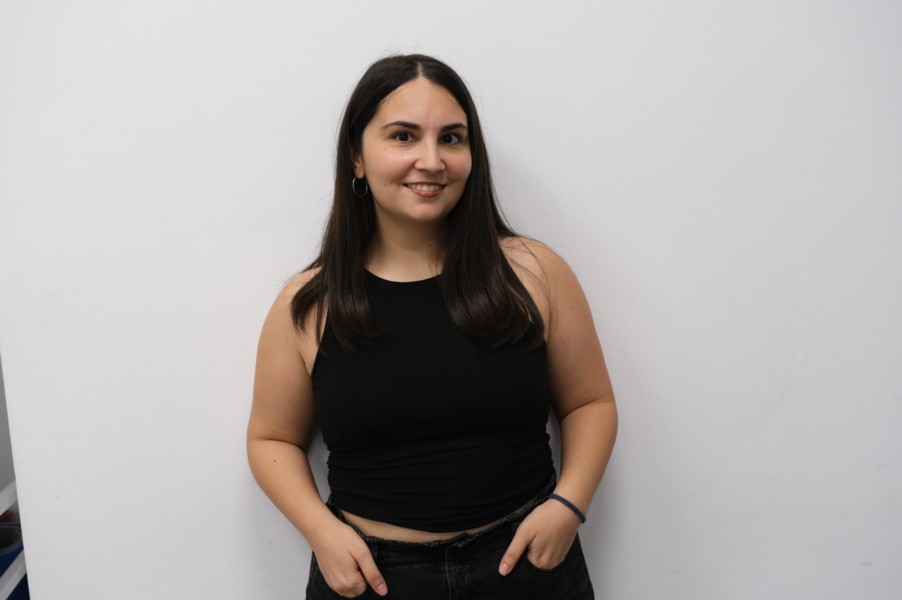

Especialista en atención y tratamiento infantojuvenil. Trabajo cada día con empatía, evidencia científica y cercanía para ayudar a los más pequeños a encontrar su voz.

Intervención clínica presencial en Espinardo y Molina de Segura.
Intervención especializada basada en el análisis de conducta aplicado (ABA).
Intervención logopédica pre y post quirúrgica. Terapia miofuncional integral.
Evaluación y tratamiento de alteraciones articulatorias y patologías de la voz.
Reeducación de patrones de respiración, succión, masticación y deglución.
Evaluación e intervención en trastornos del habla, voz y deglución en población infanto-juvenil. Coordinación activa con familias.
Reeducación del lenguaje en niños con TEA, intervención en deglución atípica e implementación de sistemas SAAC.
Diseño de programas basados en Análisis de Conducta para niños con Trastorno del Espectro Autista.
Trabajo de Fin de Grado enfocado en la intervención logopédica en frenillo lingual.
Escríbeme para valorar el caso de tu peque o contáctame directamente por WhatsApp.